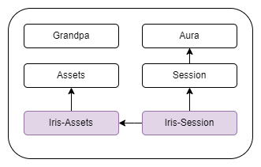
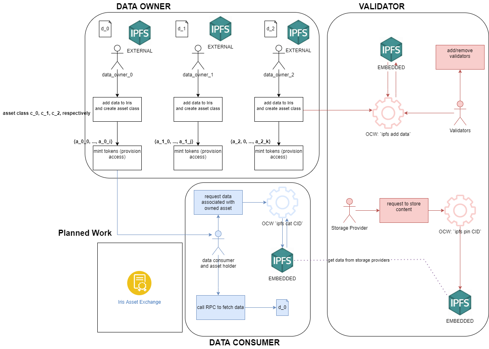
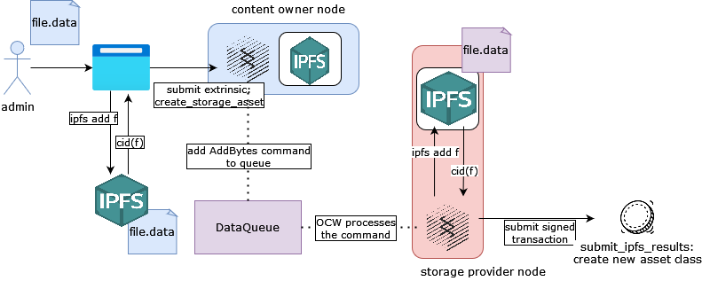
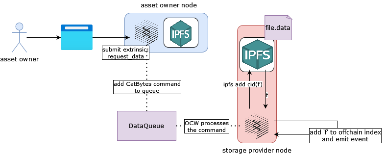

Introduction
This is the official documentation for Iris.
This documentation and any information in it is subject to frequent and radical change as Iris is developed.

Read our w3f grant proposal here
What is Iris?
Iris is a decentralized storage layer for Web 3.0. It is infrastructure for the decentralized web, providing a decentralized storage layer that can be leveraged by smart contracts and parachains, allowing access to content to be transferred across chains and monetized. It provides indexability, security, availability, and governance on top of IPFS, enabling data ownership, access management, and the commodification of latent storage capacity and content delivery. Built with IPFS and Substrate, Iris' dual network topology allows it to treat unique data as owned asset classes on the blockchain, while actual data is stored offchain in an IPFS network.
How does it work?
Iris functions by embedding an IPFS node in the Substrate runtime, allowing us to encode the DHT status on-chain.
Owned data is treated as a unique asset class within the blockchain, while access to the data is controlled by an asset minted from the asset class. Accounts that hold a positive balance of an asset are authorized to access the underlying content that the asset class is associated with. Iris will also have the capability to transfer assets between parachains and smart contracts, enabling a novel way to access data across the web.
Key Features
- Ownership and Access via Assets
- Owned content in Iris is treated as a unique asset class
- Access to content is synonymous with owning assets minted from the asset class. This allows us to easily transfer access to data across parachains and smart contracts.
- Decentralized Storage
- validator nodes can opt-in to provide storage to the network. Currently, this is only semi-decentralized while we are a proof of authority network, however we intend to transition to proof of storage capacity in the future.
- smart contract support
- interact with the iris runtime through the chain extension
- Transparent Governance
- In the future Iris will provide a robust governance framework that allows us to accomplish the same level of governance as major platform and service providers while maintaining decentralization and full transparency.
Vision
Iris aims to be a general decentralized storage layer for web3 applications, specifically in the kusama/polkadot ecosystems. Iris enables parachains, smart contracts, and parathreads to benefit from secure decentralized storage by taking advantage of XCM to transfer assets between chains.
We envision that Iris can facilitate a new variety of dapps that leverage decentralized storage, represented as asset classes, in a cross-chain, cross contract environment, where Iris can act as a common storage layer.
The initial motivation of Iris is to solve the “streaming problem”: As the number of streaming services with exclusive rights to content increases, the actual content to which consumers have access diminishes due to the arbitrary cloistering of content. In a decentralized approach, individual content owners can retain ownership of their content while doing away with a subscription based model. However, Iris may facilitate a plethora of applications whose scope is far beyond streaming.
Contact
- twitter: https://twitter.com/ideal_labs
- website: http://idealabs.network/
- email: driemworks@idealabs.network
- discord: https://discord.gg/w8PF9MM6
Getting Started
Installation
There are three ways to install iris, either building the source code, building a docker image, or simply installing from docker.
Sources
git clone https://github.com/ideal-labs/substrate.git
cd substrate
git checkout iris
cargo +nightly build --release
Docker
Install from the docker hub
docker pull iridiumlabs/iris
OR
From the latest sources, build the docker image:
docker build -t iridiumlabs/iris -f ./.maintain/Dockerfile .
Running
From Sources
# purge the local chain data
./target/release/node-template purge-chain --base-path /tmp/alice --dev -y
# run the build
./target/release/node-template \
--base-path /tmp/alice \
--dev \
--alice \
--port 30333 \
--ws-port 9944 \
--rpc-port 9933 \
--rpc-cors all \
--ws-external \
--rpc-external \
--rpc-methods=unsafe
Note: to specify a bootnode, use the bootnodes parameter. ex: --bootnodes /ip4/127.0.0.1/tcp/30333/p2p/12D3KooWEdUQFXhAF4fu9hqRTWqsigioyjatRKRZ7mwyQCBoWyK3
From Docker
docker run -p 9944:9944 \
-p 9933:9933 \
-p 30333:30333 \
-p 9615:9615 \
-it \
--rm \
--name iris-alice \
iridiumlabs/iris \
--dev --ws-external --rpc-external \
--node-key 0000000000000000000000000000000000000000000000000000000000000001
note: node-key is only needed if you want this node to be a bootnode
Interacting with your node
See the tech overview for information on extrinsics, rpc, etc.
PolkadotJs
As the UI undergoes development, the most stable way to interact with your node is to use the default polkadotjs ui.
The Iris UI
The Iris UI provides a mechanism to add and retrieve data from Iris, to create an asset class, mint assets, privision data access, and manage both asset classes and assets.
If you intend to add data to Iris, you must also run an IPFS node locally. This holds for running from sources as well as the docker image. Run IPFS with ipfs daemon.
Running from Sources
git clone https://github.com/iridium-labs/ui.git
cd ui
npm i
REACT_APP_IPV4=<your ipv4> npm start
Running from Docker
docker pull iridiumlabs/iris-ui
# replace w.x.y.z with your ip
docker run -it --rm -p 3000:3000 -e "REACT_APP_IPV4=w.x.y.z" iridiumlabs/iris-ui
Testing
Run the unit tests with cargo test.
Guidelines
We aim for a minimum of 80% coverage on new code.
Manual Testing
Our manual testing approach largely consists of invoking extrinsics and checking runtime storage. We do this using the polkadot UI: https://polkadot.js.org/apps/
Useful Tools
Calling substrate RPC endpoints
To convert strings to hex, I like this tool: https://onlinestringtools.com/convert-string-to-hexadecimal
Querying Substrate Storage
https://www.shawntabrizi.com/substrate-js-utilities/
Technical Overview
Tech Stack
IPFS
Our integration with rust-ipfs is based on prior work. The ideal-labs/substrate offchain_ipfs_v3 branch maintained in sync with the latest substrate master.
The ui we provide relies on a local IPFS instance to add data (iris does not). To add data through the UI you must first run an instance of IPFS locally (you don't need to run an IPFS if you want read only access).
Substrate
Substrate is a blockchain framework built by parity. It provides the building blocks for creating a blockchain, including the database, consensus, rpc, and much more.
React
We use react to build the user interface to interact with our node. We specifically rely on the polkadotjs and ipfs-http-core libraries.
The Iris Runtime
Iris functions by embedding an IPFS node within the substrate runtime and allowing substrate nodes to form a private IPFS swarm. By building a blockchain layer on top of the embedded storage, we are able to track calls and responses to IPFS on chain, allowing nodes to be rewarded for storing and retrieving data.
The Iris runtime builds from exsiting modules within the Substrate runtime, specifically the session and assets modules. It is currently a proof of authority network. In general, the Iris-Assets module, which depends on the assets modules, provides data ingestion, and asset class management. The Iris-Session module enables session based storage for content owner, where storage is provided by network validators. Read more on the Iris-assets and Iris-Session modules here.

Currently there are four roles that nodes can take in Iris:
- data owner
- data consumer
- validator
- storage provider
In the future another role will be created for moderation and governance capabilities.
Data owners are responsible for adding data to Iris by creating, managing and minting asset classes and assets.
Data consumers are capable of retrieving data from Iris when they hold an asset minted from some owned asset class.
Any validator is capable of being a storage provider. A storage provider is a validator that is actively storing some data associated with an owned asset class. Validators are incentivized to store data by earning reward points when they process IPFS requests or when data they are pinning is accessed.
Below, we see a high-level overview of how these four roles interact with one another. In the near future we intend to create a smart contract to realize an Iris Assets Exchange, a marketplace for data owners and data consumers to buy, sell, and share assets.

Pallets
Iris provides several new pallets on top of those available by default in Substrate.
- Iris-Assets
- Iris-Session
- Iris-Ledger
- Iris Democracy: Planned
- Iris Treasury: Planned
Completed and active modules are marked in purple, planned modules in yellow. Dependencies are represented as arrows
Iris Assets
The Iris-Assets pallet provides functionality for nodes to inject data into Iris, create and manage storage asset classes and to mint and burn assets.
Iris Session
The Iris-Session pallet provides session-based storage capabilities for network validators as well as enables ejecting data from the network. The iris-session palelt contains all functionality to interact with the embedded IPFS node. While a strict content-owner only node does not require the iris-session pallet, for both consumers and storage providers it is a necessity.
Iris Ledger
The Iris-Ledger pallet allows nodes to lock, unlock, and transfer native tokens.
Iris-Assets
Please reference the documentation here for further details on extrinsics exposed by the module.
The iris-assets module relies on the assets module available in Substrate. This pallet provides capabilities for content owners and content consumers. This module is entirely independent of IPFS. It provides capabilities to:
- inject data into the network
- create and manage storage asset classes
- mint assets
The iris-assets module delivers asset class and derived asset management. This module appends commands to a DataQueue which are processed by validator nodes (see the iris-session module for more info) in a module which implements logic for offchain workers to process commands in the DataQueue (in our case, the iris-session pallet).
Runtime Details
Extrinsics
Functions to inject data into the network and to create and manage asset classes and assets
createmintburndestroytransfer_asset
Function to allow consumers to request data from the network
request_bytes
Functions that allow offchain workers to submit results from IPFS commands
submit_ipfs_add_resultsinsert_pin_request
RPC
The iris-assets pallet contains the implementation of the RPC endpoint which fetches dat from the network. See more details here
Data Ownership as Asset Class Ownership
When a node adds data to Iris, the OCW that processes the request constructs a new asset class backed by some initial (user defined) amount of native currency. This results in a new DataCommand being added to the processing queue. When an OCW proceses the command and publishes results on chain, a new asset class is created. Asset creation and access is initiated in the iris-assets pallet but processed in the iris-session pallet.

Our initial use case makes assumptions that we will break in the future:
- There is an injective and surjective map between owner/cid and asset class.
- Owning any non-zero quantity of assets in an asset class grants the owner access to the underlying data
Accessing Data Via Minted Assets
To retrieve data, a node makes a request to Iris, adding a request to retrieve bytes to the queue. An OCW processes the command and adds the fetched content to local offchain storage. The node which requested the data can then invoke the iris_retrieveBytes RPC endpoint exposed on the node who fetched the content in order to retrieve it.
First, a node that owns some positive balance of an asset requests access to it. When this request is processed by the calling node's OCW, the OCW stores the data in offchain storage. When the RPC endpoint is invoked, the data is returned to the authorized caller in the response.

Iris-Session
The Iris-session pallet incorporates both IPFS and the session module to allow network validators to provide storage for some existing asset class for the duration of a session. In general, it provides the capabilities to:
- provide storage to the network
- capitalize on latent storage capacity
- eject data from the network
Runtime Details
Interaction with Embedded IPFS
The iris-session pallet contains the core logic for interacting with the embedded IPFS instance. In this module we expose the capability for offchain workers to process commands added to the DataQueue. Specifically, to:
- read IPFS public key and muiltiaddresses
- add data to the IPFS by processing an AddBytes command
- fetch data from IPFS by processing a CatBytes command
- pin data to IPFS by processing a PinBytes command
When a node adds an AddBytes command to the queue (via the iris-assets pallet), any other node is capable of processing the command and injecting the data into the network.
When a node adds a CatBytes command to the queue, it is uniquely processed by the calling node, adding the data to offchain storage so that it can be fetched via the RPC endpoint.
When a node adds a PinBytes command to the queue, it is uniquely processed by the calling node. The also results in the addition of the node to the Pinners storage map.
Session-based approach to adding validators
Iris is a proof of authority network. Through the usage of the session pallet, we introduce a mechanism for an existing authority to add new validators to the network. Iris uses Aura for consensus and Grandpa for block finalization and there is no alteration to the default process through which nodes are rewarded.
In the long term, we intend to create a new consensus, which we are calling Nominated Proof of Storage Capacity. Details of this to come.
Session-based approach to adding and rewarding storage providers
Note: We currently follow a fairly naive scheme for incentivizing validators to store content. We intend to replace the below scheme with something much more mature in the future.
Validator nodes are a superset of the storage provider nodes. Validators, using the iris-session pallet, can request to store some owned content added to Iris. For example, if a node has added data and created a content asset class, then a validator node can request to store the content during the subsequent session.
There are three phases to each session:
- a pre-session planning phase
- a session start phase
- a session end phase
When we say current session we mean a session that has been planned, and for which the possible storage providers are locked but not yet necessarily providing active storage. An active session is a session that has been started and for which the nodes are active storage providers. This is elaborated below:
-
Pre-session planning: candidate storage providers that have pinned the CID they requested to store are added to a collection of active storage providers for that asset class for that session. The current session is incremented by one.
-
Session Start: The active session is incremented by one.
-
Session End: Validiators that have been storing data but have not accumulated any reward points for some preconfigured number of sessions (MaxDeadSessions) is removed from the validator pool.
Reward Point Calculation
Reward points are the interim rewards that storage providers receive for processing requests in the DataQueue. DataCommands are added to the DataQueue when:
- a content owner has requested to add data to Iris via the
createextrinsic - successfully pinning data
- a consumer has requested to fetch bytes from ipfs through the
retrieve_dataextrinsic.
When data is requested from Iris, the underlying IPFS network will fetch the bytes from one of the storage providers (though it's possible it could exist in another node since we don't have much in terms of garbage collection in rust-ipfs). Though it may be possible to determine exactly which IPFS node the data was fetched from, this is most likely computationally expensive. We track the number of times some data was successfully requested (i.e. the number of times a consumer requested to fetch the content of an asset class of which they own an asset). At the end of the session, the total sum is distributed evenly to storage providers for that asset during the session.
Validators are rewarded for:
- Processing requests to inject data into IPFS (basically
ipfs add [cid])- Awarded 1 RP
- Pinning data to their embedded IPFS node (
ipfs pin [cid])- Awarded 1 RP
- Indirectly, when another node requests data they are providing storage for
- The number of unallocated tokens for the session is incremented by 1
Iris-Ledger
The ledger pallet is a utility pallet meant to facilitate locking and unlocking of funds to ensure existence of funds when buying and selling assets within the iris ecosystem.
Runtime Details
Extrinsics
lock- lock some amount of native tokensunlock_and_transfer- unlock the locked tokens and transfer all to some specified account
RPC
Iris only exposes one custom RPC endpoint. The retreiveBytes endpoint allows authorized nodes to fetch data from the iris network.
Spec
iris_retrieveBytes- Description: This RPC endpoint allows external origins to access data to which they have been granted access.
- Parameters:
- asset_id: The desired asset id
Implementation
The RPC endpoint reads from offchain storage to fetch the bytes.
Invocation of this endpoint necessitates a few prerequisites:
- The node owns an asset minted from some asset class
- Some node is storing the data in the embedded IPFS node, be it a storage provider, the data owner, or just some other consumer who has already requested the data.
- The node has invoked the
request_bytesextrinsic, which fetches the data from IPFS and adds it to offchain storage
Example
Assume that you have requested access to some CID: QmVsbXUbr5JwUDibTBmmh224GhWy1FWguTbHb3DTU3ahTE. First, convert the CID to hex: 0x516d56736258556272354a775544696254426d6d6832323447685779314657677554624862334454553361685445
and use it as the message field value, passing empty bytes to the other fields.
curl http://localhost:9933 -H "Content-Type:application/json;charset=utf-8" -d '{"jsonrpc": "2.0", "id": "1", "method": "iris_retrieveBytes", "params": ["392"]}'
Building smart contracts on iris
Iris leverages the contracts module to allow users to deploy their own contracts to the iris blockchain. We enable developers to build dapps that take advantage of the iris runtime. In particular, Iris exposes a chain extension that provides functionality to call into the iris runtime from contracts deployed to the chain.
DApps on Iris
The Iris Asset Exchange
The first app built on Iris is an asset exchange to allow data owners to sell access to data consumers.
Developing a dapp
The Iris Chain extension
Deploying a dapp
TODO
Chain Extension
The iris chain extension provides functionality for dapp developers to hook into the iris runtime. More specifically, it exposes the ability to call extrinsics from the iris-assets pallet and the iris-ledger pallet to enable developers to manage assets via mint and transfer abilities and to lock, unlock, and transfer tokens to other accounts.
Exposed Functions
From the Iris-Assets pallet
See the iris-assets for more details.
-
mint
-
transfer_assets
From the Iris-Ledger pallet
See the iris-ledger for more details.
-
lock_currency
-
unlock_and_transfer_currency
Usage
To functions from the chain extension in your smart contract, register the chain extension:
#![allow(unused)] fn main() { #[ink::chain_extension] pub trait Iris { type ErrorCode = IrisErr; #[ink(extension = 0, returns_result = false)] fn transfer_asset( contract_account: ink_env::AccountId, consumer_account: ink_env::AccountId, asset_id: u32, asset_quantity: u64 ) -> [u8; 32]; #[ink(extension = 1, returns_result = false)] fn mint(caller: ink_env::AccountId, target: ink_env::AccountId, asset_id: u32, amount: u64) -> [u8; 32]; #[ink(extension = 2, returns_result = false)] fn lock(amount: u64) -> [u8; 32]; #[ink(extension = 3, returns_result = false)] fn unlock_and_transfer(target: ink_env::AccountId) -> [u8; 32]; } }
and invoke the chain extension function:
#![allow(unused)] fn main() { self.env() .extension() .mint( caller, self.env().account_id(), asset_id, amount, ).map_err(|_| {}).ok(); }
Iris Asset Exchange
The Iris Asset Exchange is a decentralized exchange to facilitate the buying and selling of assets in Iris.
Usage
The source code and README for the IAE is located here.
The iris-ui exposes a user interface to interact with the contract.
Functions
publish_token_sale
Mint new tokens and gives ownership of them to the contract account. The owner specifies a static price that consumers pay in order to purchase the asset.
Parameters:
- asset_id: The id of some owned asset
- quantity: The quanity of assets to mint and transfer to the contract
- price: The price per minted asset
purchase_tokens
- lock price*amount tokens
- transfer tokens to the caller (from the contract account)
- unlock tokens
- caller transfer tokens to the owner
Governance and Moderation
Governance and decentralized moderation are planned for the future and do not currently exist within Iris.
We intend for there to be three layers to this. Layer 0: Automod capabilities via some ML algorithm. Layer 1: User initiated reporting and reviewing/reputation score buildup Layer 2: Democratically elected moderators to provide human input - much the same as moderators exist today.
Glossary
- asset
- asset class
- cid
- ipfs
- multiaddress
- substrate